Procedimentos e tratamentos.
Conheça nossos procedimentos, tecnologias e as novidades da dermatologia.
88 publicações

Descubra o Segredo da Beleza Renovada: ATRIA II – A Tecnologia que Transforma Você!
Você sonha em ter uma pele mais firme, contornos faciais definidos e um corpo mais esculpido, sem procedimentos invasivos? A busca por resultados estéticos eficazes e seguros acaba aqui.Apresentamos o ATRIA II, a inovaçã

Alergia de Contato: O que é e Como Tratá-la
A alergia de contato é uma condição cutânea comum que afeta pessoas de todas as idades. Essa reação alérgica ocorre quando a pele entra em contato com substâncias irritantes ou alergênicas, desencadeando uma resposta inf

Cuidados Essenciais com a Pele Acima dos 60 anos: Dicas para uma Aparência Radiante e Saudável
À medida que avançamos na idade, os cuidados com a pele se tornam ainda mais vitais para manter uma aparência saudável e radiante. A pele com mais de 60 anos requer atenção especializada para combater os efeitos do envel
Descobrindo os Benefícios Revolucionários do Ultrassom Microfocado para a Pele
Se você está em busca de uma solução não invasiva e altamente eficaz para melhorar a aparência da sua pele, o ultrassom microfocado pode ser exatamente o que você precisa! Esse tratamento inovador tem conquistado o mundo
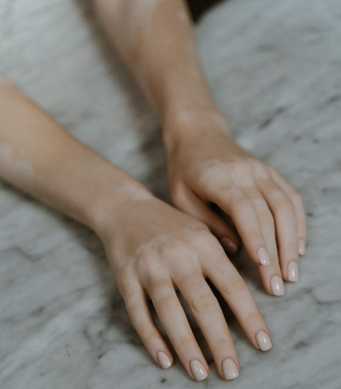
Dia Nacional do Portador de Vitiligo: Conscientização e Empoderamento da Comunidade
O Dia Nacional do Portador de Vitiligo é uma data especial para comemorar a diversidade e aumentar a conscientização sobre essa condição cutânea. Neste artigo, vamos explorar a importância dessa celebração e como ela con
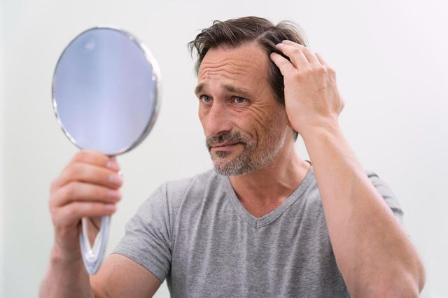
Dermatite Seborreica: Entenda, Trate e Conquiste Pele Saudável
A dermatite seborreica é uma condição de pele comum que pode causar desconforto e constrangimento para aqueles que a enfrentam. Caracterizada por manchas avermelhadas e escamosas na pele, geralmente ocorre no couro cabel

Tratamentos para Reduzir Papada: Conheça as Melhores Opções para um Perfil mais Harmonioso
Se você busca uma solução eficaz para reduzir a papada e obter um perfil mais harmonioso, este artigo é para você. Aqui, apresentaremos diversas técnicas de tratamento, desde abordagens não invasivas até procedimentos ci
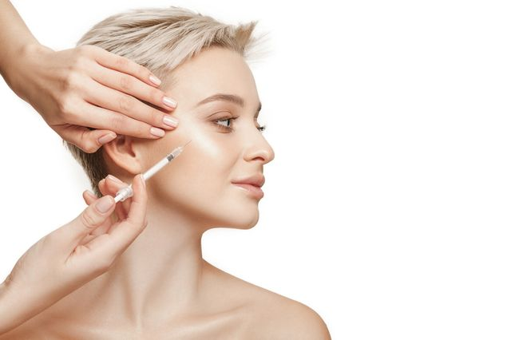
Toxina botulínica além da estética: veja outras finalidades da substância
A toxina botulínica é o sonho estético de muitas pessoas, não é mesmo? Afinal, para tratar ou prevenir rugas, além de promover um aspecto de rejuvenescimento facial, a substância é a mais procurada. Ela tem o poder de re

Doenças da pele negra: Acantose Nigricans
A Acantose Nigricans é uma doença que acomete mais pessoas de pele negra do que de pele branca e se caracteriza pelo espessamento e escurecimento de regiões do corpo. Normalmente, aparece nas regiões do pescoço e da axil

Melasma: Veja as Melhores Formas de Tratar
O melasma é uma doença causada pelo aparecimento de manchas na pele. Geralmente, essas manchas são no tom amarronzado e surgem na região da bochecha e do nariz, embora também possa aparecer no rosto inteiro e em algumas
Curiosidades Sobre a Toxina Botulínica
Saiba Tudo Sobre a Toxina Botulínica

Morpheus: conheça tudo sobre o tratamento mais eficaz para flacidez
Já sonhou em ter a pele linda, firme e com aspecto jovem e viçoso? Isso pode ser conquistado com um dos aparelhos mais modernos para tratamento da flacidez, o Morpheus 8. O equipamento une as tecnologias da radiofrequênc
Toxina Botulínica no Verão Pode?
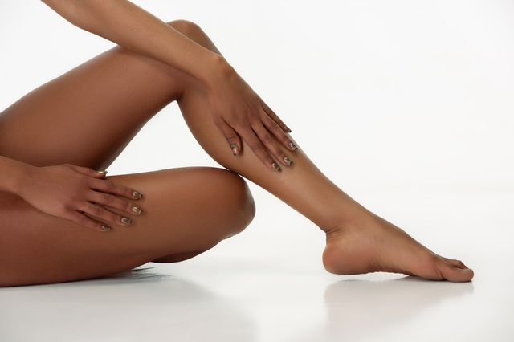
Depilação a Laser na Pele Negra é Possível?
A depilação a laser na pele negra é um tema alvo de muitas dúvidas. Entre eles, está o estigma de que o procedimento não pode ser realizado por conta das queimaduras que o laser causa em pessoas de cor escura. Porém, iss
NOVIDADE! Conheça o Morpheus e saiba o que ele pode fazer por você.
Dúvidas frequentes sobre LASER com Dra. Yana Carvalho.
Avaliação mais eficaz e moderna que existe na dermatologia.
Agora, a Skin Prime conta com o QuantifiCare, que é o método de avaliação mais eficaz e moderno que existe na #dermatologia. O sistema fotográfico permite uma identificação precisa das estruturas da pele em 3D, quantific
Preenchimento ou BTX?
Cada procedimento possui um mecanismo de ação. O preenchimento com ácido hialurônico repõe o volume perdido em determinadas áreas do rosto e melhora o contorno da face, reduzindo a flacidez. Já a toxina botulínica age na
Tratamento para o Melasma
Com frequência recebemos muitas perguntas sobre tratamentos e cura do melasma.O melasma é uma doença crônica, não tem cura. Mas tem tratamento e quando associado a cuidados diários proporcionam resultados muito satisfató
Novas tecnologias que já estão disponíveis na clínica!
Morpheus
As doenças dermatológicas mais frequentes
J Clin Aesthet Dermatol. 2022 maio;15(5): E82-E86. Tendências em visitas ao consultório para as cinco doenças de pele mais comuns nos Estados UnidosAyman Grada 1 PMID: 35642232 PMCID: PMC9122273Os cinco diagnósticos de p
News: o que importa saber sobre a dermatologia
Mudança no tratamento da hanseníaseEm 2021, o Ministério da Saúde emitiu uma nota técnica com novo esquema de tratamento para a hanseníase, chamada poliquimioterapia única (PQT-U). De acordo com a nota técnica, tanto as
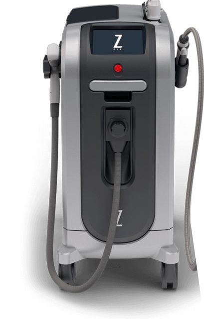
ZYE - Smart Laser
A Skin Prime é a única clínica de Recife que dispõe do ZYE LASER, o primeiro SmartLASER do mundo, a última geração de laser do mercado. O ZYE traz ponteiras com intenso resfriamento por SAFIRA, o que confere maior segura

Depilação definitiva com laser ND-YAG
– Trata todos os fototipos (I a VI), incluindo pele bronzeada no verão– Permite tratamentos rápidos e eficazes: permite controle independente da fluência, duração do pulso e taxas de repetição de modo a personalizar os t
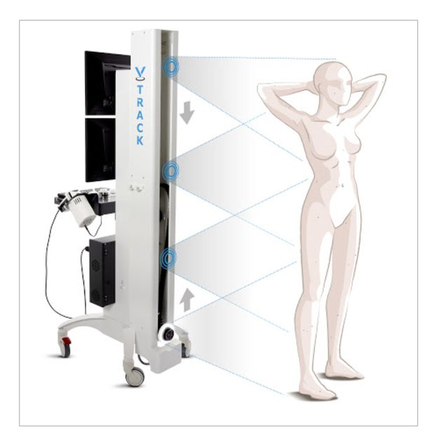
Dermatoscopia Digital
Consiste na dermatoscopia ampliada de todos os sinais do corpo, com aumentos que variam de 20 até 100 vezes do seu tamanho original. Com esse exame é possível, além de indicar precocemente a retirada de alguma lesão susp
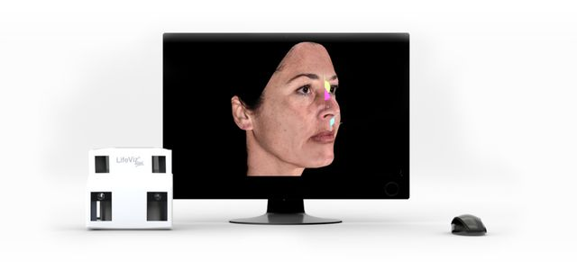
LifeViz® - Quantificare
Premiado como Melhor Dispositivo Estético, o LifeViz® Mini foi projetado para ilustrar o rosto em 3D. Conhecido por sua qualidade e precisão de imagem, com o LifeViz® Mini é possível registrar sem sistemas de reposiciona
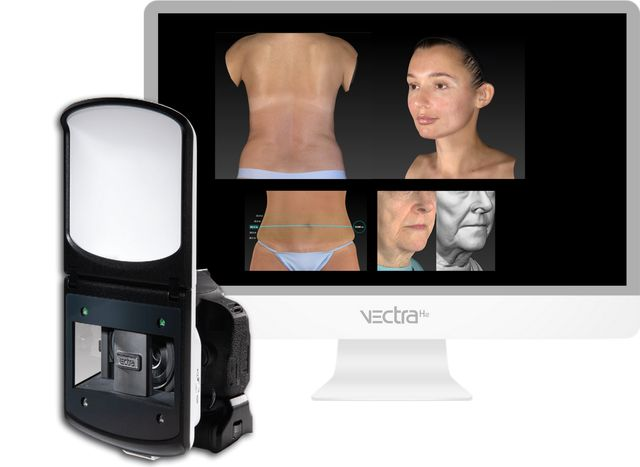
Vectra H2
À TECNOLOGIA DO VECTRA H2 GERA IMAGENS 3D DO ROSTO E DO CORPO A PARTIR DA COSTURA DE 3 FOTOS. ESSA IMAGEM DIGITAL AUXILIA NA AVALIAÇÃO E NA ANÁLISE MAIS APRIMORADA PARA A ESCOLHA DO TRATAMENTO MAIS ADEQUADO PARA CADA CAS
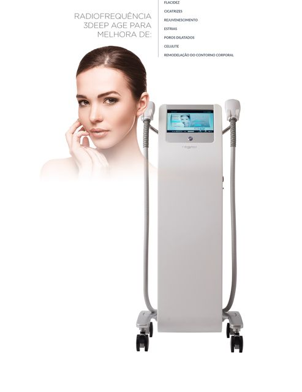
EndyMed
A ENDYMED É UMA PLATAFORMA DE RADIOFREQUÊNCIA SUPERPOTENTE QUE, POSSIBILITA TRATAMENTOS FACIAIS E CORPORAIS PARA DIVERSAS PATOLOGIAS E TRATAMENTOS.
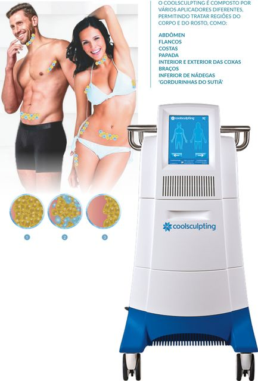
COOLSCULPITING
O PROCEDIMENTO COOLSCULPTING FORNECE RESFRIAMENTO CONTROLADO COM PRECISÃO PARA ATINGIR AS CÉLULAS ADIPOSAS SOB A PELE. ESSAS CÉLULAS DE GORDURA SÃO CRISTALIZADAS (CONGELADAS), DESTRUÍDAS, E EM ATÉ 12 SEMANAS, O CORPO PRO
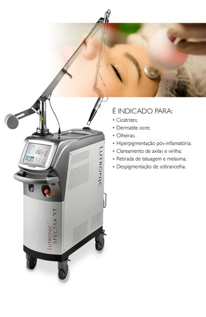
SPECTRA XT
A TECNOLOGIA MAIS COMPLETA DE TRATAMENTOS A LASER INDICADA PARA DIVERSOS PROCEDIMENTOS, INCLUINDO O REJUVENESCIMENTO E REMOÇÃO DE MANCHAS E TATUAGENS. O EQUIPAMENTO EMITE LASERS EM NANO E MICROSSEGUNDOS QUE SÃO ABSORVID
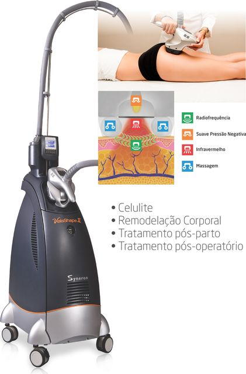
VELA SHAPE 2
REFERÊNCIA MUNDIAL NOS TRATAMENTOS DE CELULITE E REMODELAÇÃO CORPORAL. A EXCLUSIVA TECNOLOGIA ELOS DO VELASHAPE 2 PROPORCIONA RESULTADOS SUPERIORES EM MUITO MENOS TEMPO, COM SESSÕES MUITO MAIS RÁPIDAS E CONFORTÁVEIS.
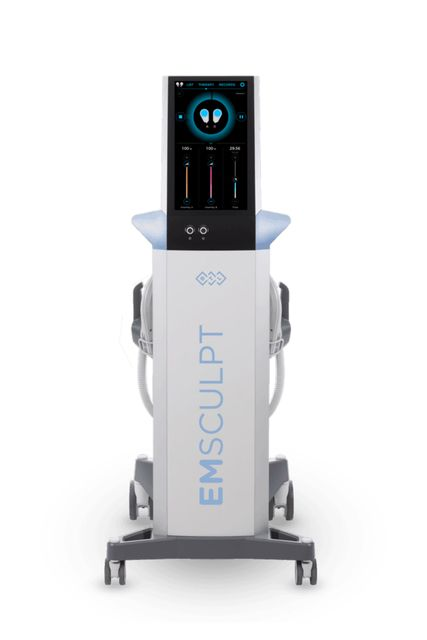
EMSCULPT - BLT
QUEIME GORDURA E CONSTRUA MÚSCULOSEMSCULPT USA A TECNOLOGIA DE ENERGIA FOCALIZADA DE ALTA INTENSIDADE. COM A TECNOLOGIA HIFEM (High Intensity Focused Electromagnetic Therapy) INDUZ 20MIL POTENTES CONTRAÇÕES MUSCULARES PO
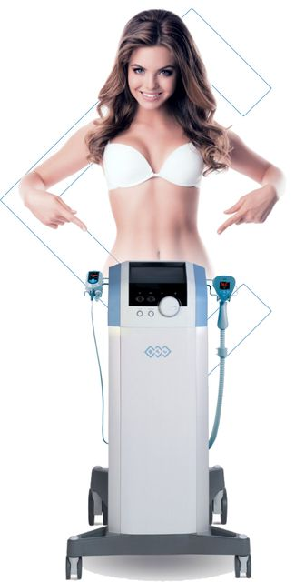
EXILIS ULTRA 360º - BLT
TRATAMENTOS DA CABEÇA AOS PÉSA ÚNICA PLATAFORMA DE MÚLTIPLAS APLICAÇÕES QUE COMBINA RÁDIO FREQUÊNCIA & ULTRASSOM COM MONITORAMENTO DA TEMPERATURA EM TEMPO REAL E RESFRIAMENTO CONTROLADO.
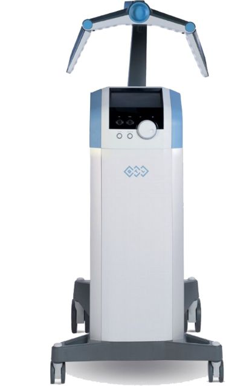
VANQUISH - BTL
REMOÇÃO DE GORDURA E REDUÇÃO DE MEDIDASO BTL VANQUISH É A PRIMEIRA RÁDIO FREQUÊNCIA SELETIVA SEM CONTATO. ELA ATUA NA RUTURA DAS CÉLULAS ADIPOSAS (GORDURA). O DISPOSITIVO APRESENTA A MAIOR ÁREA DE TRATAMENTO DO SETOR, O
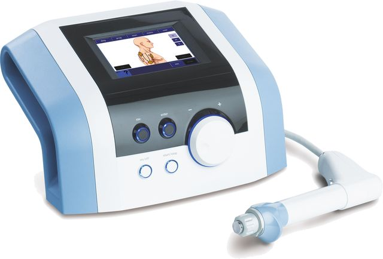
X-WAVE - BTL
TRATAMENTO DE CELULITE E MELHORA A TEXTURA DA PELEO BTL x-wave alcança os melhores resultados no tratamento não-invasivo da textura da pele do paciente utilizando o poder das vibrações direcionadas, o BTL x-wave contribu
ZYE - Smart Laser
A Skin Prime é a única clínica de Recife que dispõe do ZYE LASER, o primeiro SmartLASER do mundo, a última geração de laser do mercado. O ZYE traz ponteiras com intenso resfriamento por SAFIRA, o que confere maior segura
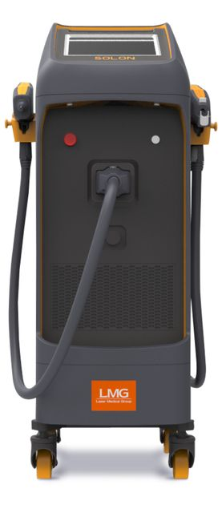
Ultraction 3D
Ultraction 3D, da plataforma Solon, é um ultrassom micro e macrofocado que trata pontos específicos, pois a tecnologia 3D ajusta exatamente a profundidade onde o aparelho vai agir e o tamanho do dano térmico. O tratament
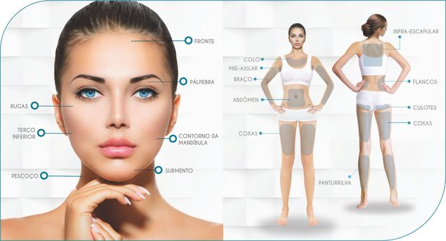
Ultraformer 3
IMAGINE PARECER MAIS JOVEM SEM INTERVENÇÃO CIRÚRGICA, ATRAVÉS DA TECNOLOGIA MAIS CONCEITUADA DO MOMENTO E COM RESULTADOS MUITO MAIS NATURAIS A PARTIR DE 30 DIAS.TRATAMENTOS FACIAIS • MELHORA A ESPESSURA DA PELE • SUA PEL
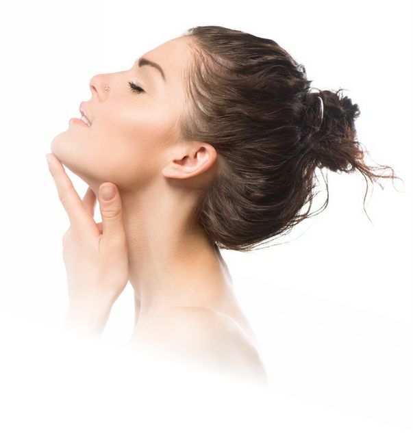
Ulthera
O Ulthera é uma nova tecnologia, baseada na energia do ultrassom micro focado, para tratamento da flacidez cutânea. Ele emite ondas que aquecem as camadas mais profundas da pele, para estimular a formação de colágeno, qu
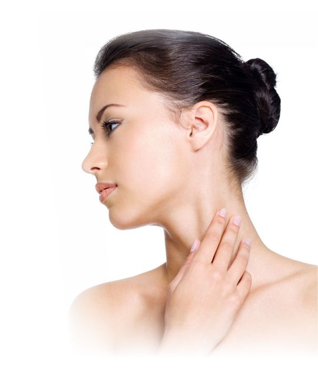
Intradermoterapia Emptiers
Emagrecimento Facial São enzimas injetáveis em nível subdérmico na região das bochechas. Elas fazem a compactação das célulasde gordura ajudando a dar destaque nos contornos naturais do rosto. A aplicação é feita após an
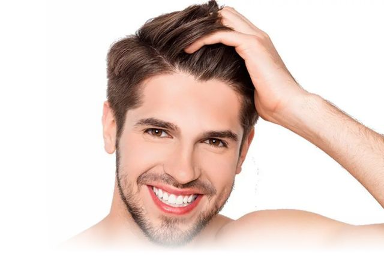
Tratamento Capilares
TRATAMENTOS AVANÇADOS A LASERA terapia capilar através da utilização do laser vem sendo usada com grande eficácia nos últimos anos. Pela fotobioestimulação, a energia laser age diretamente sobre o bulge piloso, estrutur
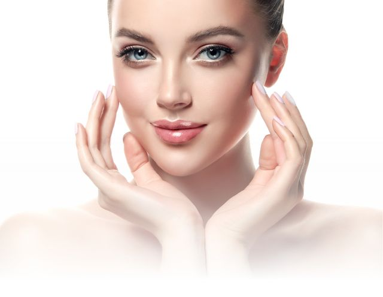
Bioestimuladoresde Colágeno
ÁCIDO POLI-LÁCTICO O ácido poli-láctico é um potente Bioestimulador de colágeno injetável e absorvível pelo organismo. Ele atua de dentro para fora, suavizando os sinais do envelhecimento e melhorando a flacidez da pele
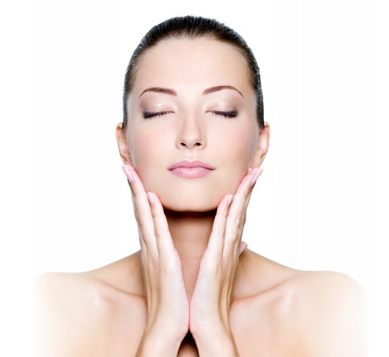
Toxina Botulínica A
É uma neurotoxina injetada em quantidades muito pequenas em um músculo facial específico. O músculo é enfraquecido e relaxado, para não contrair. Esse tratamento previne que se formem novas rugas. Deste modo, a toxina bo
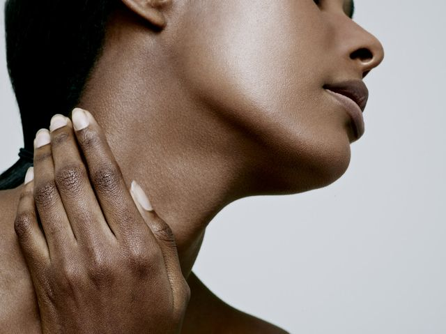
Ácido Hialurônico
O ácido hialurônico é injetado nas camadas (superficiais ou profundas) da pele, para trabalhar o contorno facial e repor volume onde houve reabsorção óssea. Tem a finalidade de hidratar a pele, corrigir linhas de express
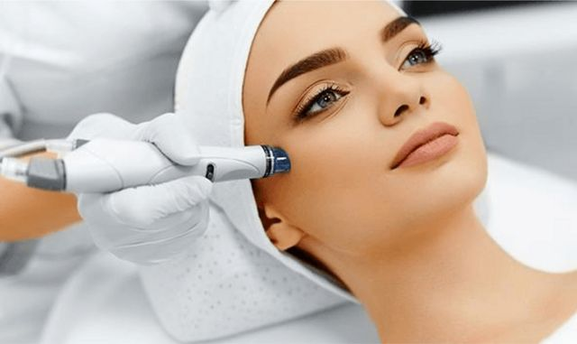
Dermoabrasão e Microdermoabrasão
A dermoabrasão é um procedimento indicado principalmente para o tratamento de cicatrizes inestéticas causadas pela acne.Indicado principalmente para o tratamento de cicatrizes inestéticas causadas pela acne, traumas ou c
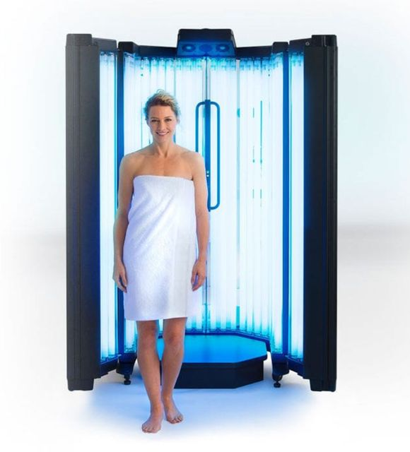
Fototerapia
Técnica terapêutica que consiste na emissão artificial e indolor de radiação ultravioleta (UVA e UVB), fornecida através de aparelhos especiais sob a forma de cabine com lâmpadas fluorescentes.A Fototerapia tem como vant
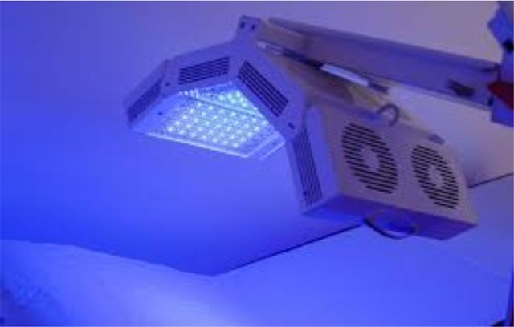
Led - Light Emitting Diode
Fotomodulação é um processo que modifica a atividade celular usando fonte de luz sem efeito térmico. O uso de LED (Light Emitting Diode) melhora a aparência da pele fotoenvelhecida. Essa luz monocromática pode ativar tan
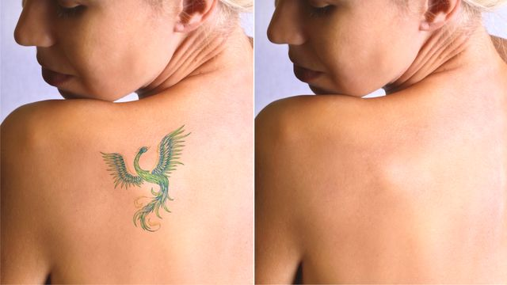
Remoção de tatuagens
Pesquisas mostram que aproximadamente 35% das pessoas tatuadas se arrependem do procedimento.E para quem opta pela remoção, o tratamento a laser é o mais indicado, pela sua segurança e efetividade. A função do laser, nes
Rejuvenescimento 4d
São múltiplas modalidades de laser ( Nd:yag e Erbium:yag ) combinados em uma mesma sessão. Inicia-se a aplicação pelo modo intraoral, seguido de duas modalidades de Nd:YAG e finalizado com o erbium: YAG 2940. O resultad
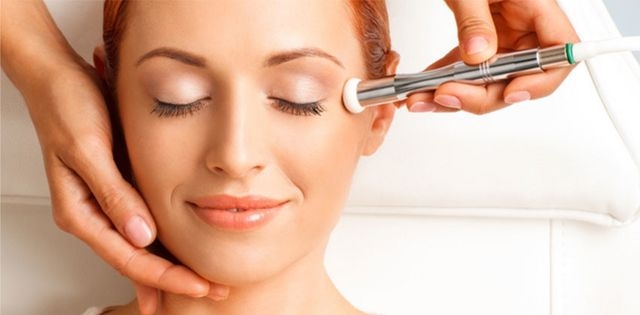
Peeling de cristal
O peeling de cristal possibilita a remoção de células mortas da pele, regenerando a área tratada. Seu rosto ganha uma textura macia e delicada.O tratamento utiliza cristais de hidróxido de alumínio para fazer uma microde
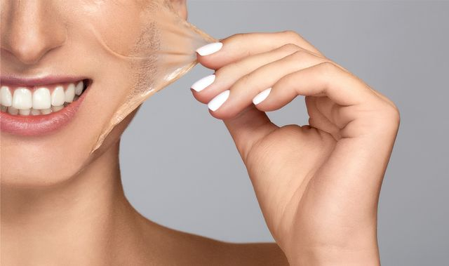
Peelings químicos
Peelings consistem na aplicação de substâncias químicas, usualmente ácidos, de intensidade pré-definida para pele, promovendo esfoliação química e destruição controlada das camadas mais externas da pele, estimulando ren
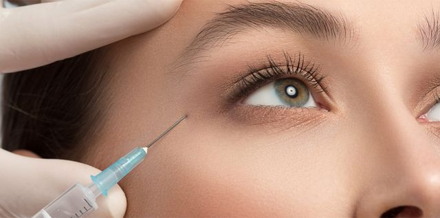
Tratamento para olheiras
As olheiras têm várias causas e na maioria das vezes apresentam componente misto. Podem ter origem genética, a causa mais comum; podem ser de origem vascular, pela excessiva vascularização do local, usualmente agravada
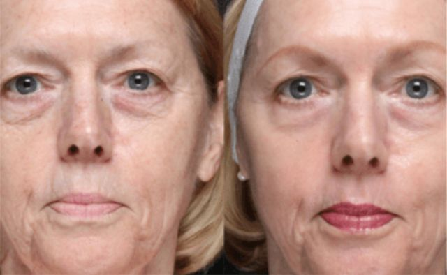
Laser de CO2
A primeira geração de lasers para rejuvenescimento foi criada há mais de 20 anos. O chamado laser de CO2 fracionado é uma evolução dos antigos lasers ablativos. Com o fracionamento do feixe de luz que incide na pele temo
Aposte numa rotina de skincare
Manter uma rotina de cuidados é o principal segredo para garantir uma pele bonita, hidratada e saudável. Por isso, encare o skincare não como uma obrigação, mas sim, como um ritual diário, desenvolvido com o objetivo de
Nutrição funcional & Nutrição estética
Você sabe para que serve a nutrição estética? Pois bem, ela é essencial para potencializar os procedimentos estéticos e as cirurgias plásticas. Dependendo dos alimentos e nutrientes que ingerimos, podemos melhorar não só

Ritidoplastia
Tecnicamente conhecida como ritidoplastia, a cirurgia da face é um procedimento cirúrgico para melhorar sinais visíveis de envelhecimento no rosto e no pescoço tais como:• Flacidez no terço médio da face;• Vincos profund

Rinoplastia - Cirurgia do Nariz
Rinoplastia é uma cirurgia realizada na estrutura nasal para melhorar a estética ou a respiração do indivíduo.Serve para correção de deformidades traumáticas ou naturais e ainda para corrigir disfunções. Muitas vezes é a

Otoplastia - Cirurgia das Orelhas
A Otoplastia trata especificamente orelhas muito grandes, orelhas salientes que ocorrem em um ou ambos os lados em diferentes graus.O procedimento oferece resultados quase imediatos em casos de orelhas de abano, visíveis
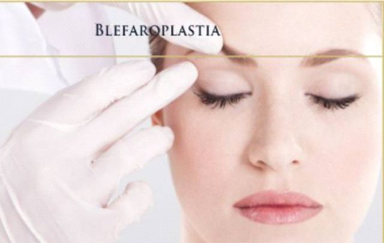
Blefaroplastia- Cirurgia das Pálpebras
Blefaroplastia é a cirurgia plástica que melhora o aspecto das pálpebras superiores e inferiores, eliminando bolsas de gordura, rugas, flacidez e com isso rejuvenescendo a região em torno dos olhos. Costuma ser procurada
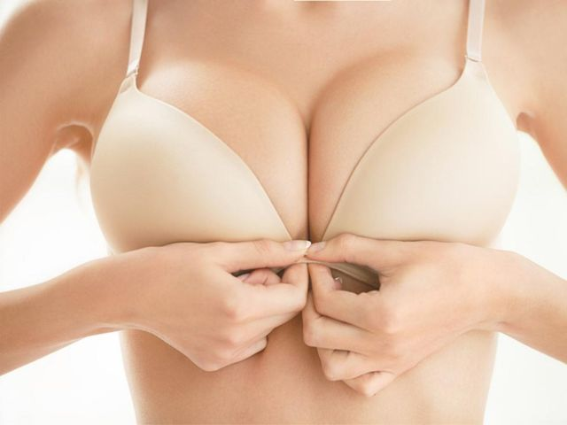
Mamoplastia de Aumento- Prótese de mama
A cirurgia de aumento de mama utiliza implantes para dar volume aos seios ou restaurar o volume mamário perdido após perda de peso ou gravidez.Se você está insatisfeita com o tamanho da sua mama, a cirurgia de aumento de
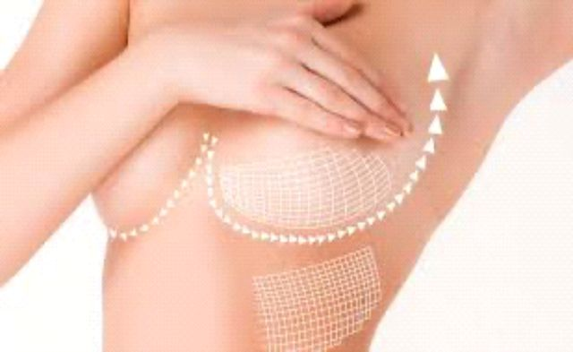
Mamoplastia Redutora
A redução de mama remove o excesso de gordura, o tecido glandular e a pele para atingir um tamanho de mama proporcional com o seu corpo e aliviar o desconforto associado com seios muito grandes.Seios excessivamente grand
Lipoaspiração
Também conhecida como lipoescultura, a lipoaspiração remodela áreas específicas do corpo, removendo o excesso de depósitos de gordura, melhorando os contornos do corpo e a proporção.Apesar de boa saúde e da prática de ex
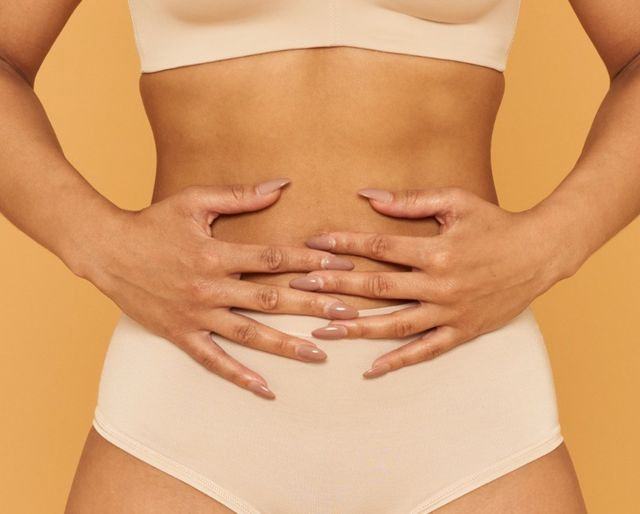
Abdominoplastia
Procedimento em que se remove o excesso de gordura e de pele e, na maioria dos casos, restaura os músculos enfraquecidos ou separados, criando um perfil abdominal mais suave e tonificado. Ter um abdômen liso e tonificado
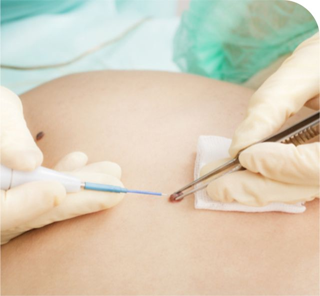
Pequenas cirurgias
Elas são uma ótima opção para o tratamento de cistos, unhas encravadas, correção de lóbulo de orelha e outras patologias. Além disso, é possível tratar ou prevenir os sinais do tempo, através das pequenas cirurgias. O bo

Eletrocauterização: eletricidade e calor podem ser a solução
Esse procedimento pode ser realizado para fins estéticos ou preventivos. É que, ele é indicado para a remoção de tumores benignos ou pré-malignos. De todo modo, a intervenção é feita por meio de uma carbonização por elet

Curetagem dermatológica também é uma opção?
Essa também é uma intervenção cirúrgica simples e rápida, indicada para a remoção de lesões como verrugas virais, moluscos contagiosos, ceratose seborreica e outros problemas. Mas, dessa vez, a remoção é realizada atravé

Fazer biópsia é preocupante?
Muita gente se assusta quando o médico pede para o paciente realizar uma biópsia, né? Logo se imagina que existam suspeitas, que algo grave está acontecendo. Mas, não há motivo para essa preocupação toda. A biópsia é nec
Cabelos saudáveis e os cuidados em casa
Para prevenir alguns problemas capilares, nada melhor do que uma rotina de cuidados, né? Uma boa forma de fortalecer os fios, é iniciar um bom cronograma capilar, que engloba três tratamentos principais: hidratação, nutr
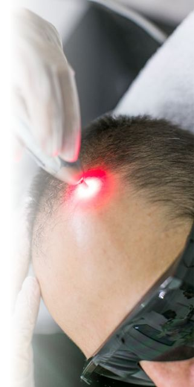
MMP e Laser fracionado
MMPO Método de Microinfusão de Medicamentos é uma outra forma de combater a queda de cabelo e alguns outros problemas. Durante o procedimento, os medicamentos são inseridos por meio de um aparelho com 27 agulhas finas no
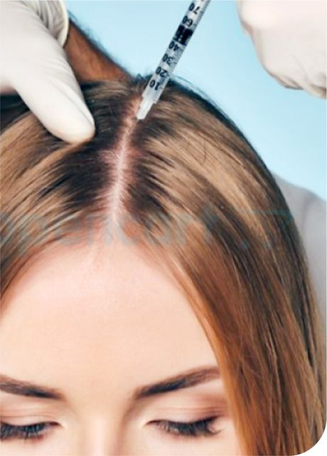
Intradermoterapia
Uma ótima opção para se livrar da queda capilar. O procedimento se resume na aplicação de medicamentos e vitaminas na derme ou no tecido subcutâneo do couro cabeludo. A ação provoca o crescimento dos fios e estimula a nu
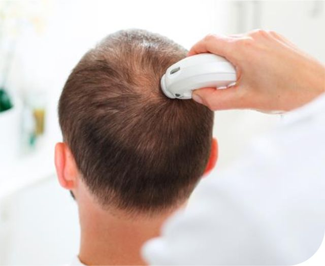
Tricologia
Dizem os sábios, que o cabelo é a moldura do rosto, por isso ele merece todo o cuidado. E você deve concordar, que uma bela moldura consegue realmente valorizar ainda mais uma obra de arte! Por sorte, temos a tricologia
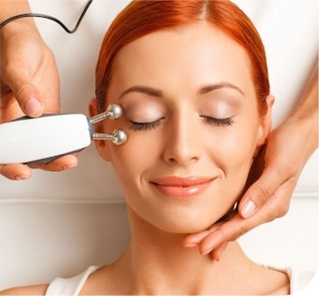
Radiofrequência
É indicada para tratar a flacidez, já que aquece as camadas mais profundas da pele. O procedimento é capaz de promover a contração imediata do colágeno presente na pele. Isso permite a produção de novas fibras. A radiofr
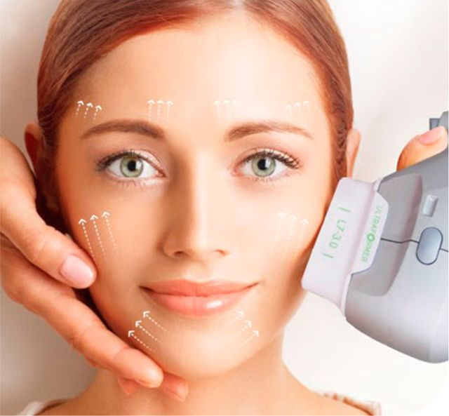
Ultrassom Micro e Macrofocado
Para garantir a firmeza da pele e melhorar o tônus muscular, a melhor opção é realizar um ultrassom microfocado ou macrofocado. O tratamento que não é invasivo, pode ser aplicado no rosto, pescoço, colo, braços, abdômen,
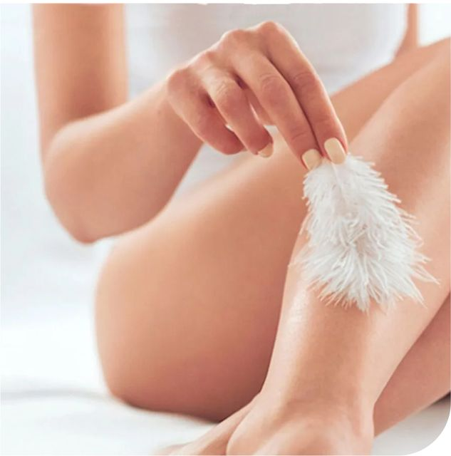
Depilação a Laser
Um método eficaz e indolor para depilação pode fazer uso de um laser, que vai remover progressivamente os pelos. No corpo ou no rosto, o laser é captado pela melanina que é o pigmento responsável por dar cor à pele e aos
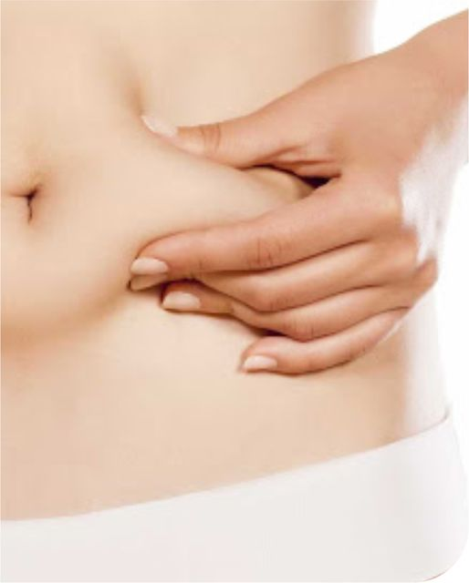
Gordura localizada
A gordura localizada nada mais é do que uma reserva energética, mas elas costumam incomodar e podem atrapalhar a autoestima de quem as possui. Algumas pessoas chegam até a não se sentir à vontade em vestir um traje de ba
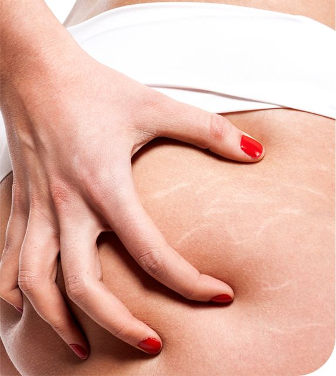
Cicatrizes e Estrias
Quem não tem uma cicatriz de infância? Elas são comuns e surgem quando a pele é rompida por algum trauma físico, como machucados, queimaduras, cirurgias ou acne. No momento em que o machucado arranca a derme (segunda cam
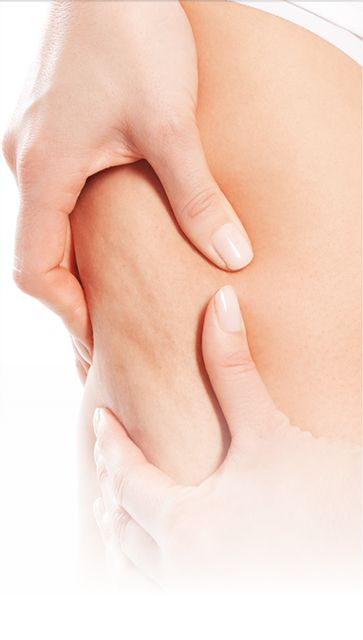
Flacidez e Celulite
A perda das fibras de colágeno e elastina é uma das principais causas pela flacidez do rosto e do corpo, porque são elas as responsáveis pela sustentação da pele. Os principais fatores que resultam nessa perda são a rete
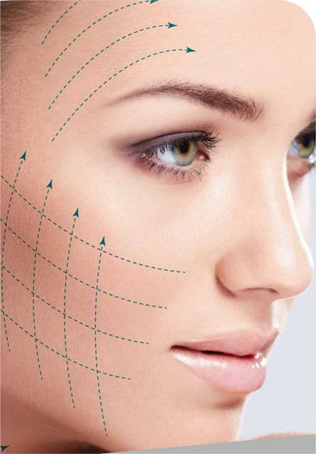
Fios de Sustentação
Para melhorar a perda da firmeza e flacidez da pele, é possível aplicar fios absorvíveis e não-absorvíveis que vão promover um efeito lifting em regiões do rosto. A suspensão dos tecidos caídos aumentam o efeito de uma p
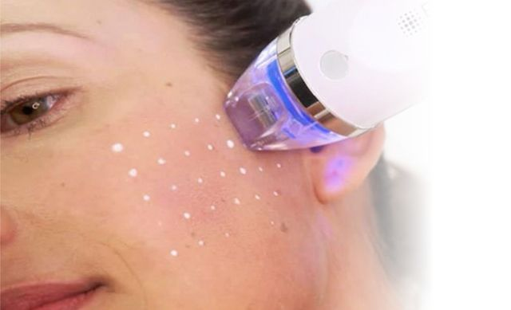
Microagulhamento
A indução de colágeno e outras fibras naturais da pele pode ser estimulada a partir desse procedimento. Pessoas com cicatrizes de acne, melasma, estrias ou com calvície, podem fazer sessões de microagulhamento.A técnica
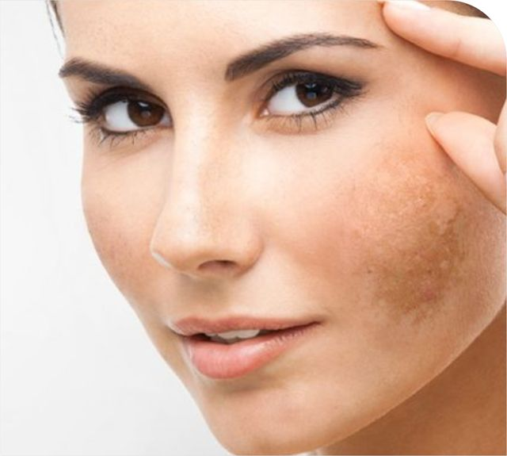
Laser de Picossegundos
O avanço no universo dos lasers já permite a remoção de tatuagem com maior eficácia e menor dano térmico na pele. Por meio de pulsos rápidos, o profissional de dermatologia consegue retirar a tatuagem da pele de alguém.
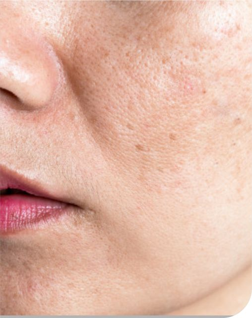
Manchas e melasma
A gente sabe que as manchinhas na pele sempre incomodam! Os fatores para explicar o surgimento das hiperpigmentações podem ter relação com: exposição ao sol, alergias, gravidez, alterações nos hormônios ou a idade mesmo.
Laser Quality switched (Q-Switched)
Na Dermatologia, os lasers Q-switched geralmente são utilizados para tratar as lesões pigmentadas. Os casos de melasma, melanose, manchas escuras na virilha e axilas, podem ter resultados eficazes com essa tecnologia. Al
Olheiras
Se suas olheiras estão gritando, tá na hora de dar um jeito nelas! A maior concentração de melanina, perda de gordura subcutânea ou vasos sanguíneos podem provocar hiperpigmentações nas áreas das pálpebras. No entanto, q
Luz Intensa Pulsada
Diversos estudos demonstram que a luz intensa pulsada pode promover efeitos como rejuvenescimento da pele, estimular a produção de colágeno e elastina. O uso também é indicado para melhora da aparência das rugas finas e
Preenchimento injetável
Na dermatologia você já encontra uma série de opções em procedimentos estéticos que servem para corrigir rugas e linhas de expressão, remodelar o contorno da face, promover sustentação e dar o efeito lifting. Preenchedor
Lasers
Na prática, essa tecnologia produz radiação eletromagnética que pode ser indicada para diversas finalidades. Atualmente os lasers são amplamente utilizados nos tratamentos dermatológicos. As suas principais indicações sã
Botox (Toxina botulínica)
O tratamento de rugas e linhas de expressão pode contar com a ajuda desse queridinho. Sabe aquele famoso pé de galinha e as linhas na testa? Então, eles podem desaparecer com o uso da Toxina Botulínica. O botox atua evit
Nenhuma publicação encontrada.
Agende sua visita
Sua pele merece um olhar atento.
Fale com nossa equipe e faça parte da melhor experiência em saúde, beleza e bem-estar do Recife.
Agendar pelo WhatsApp